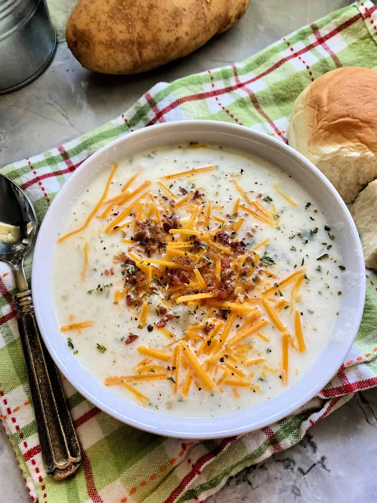
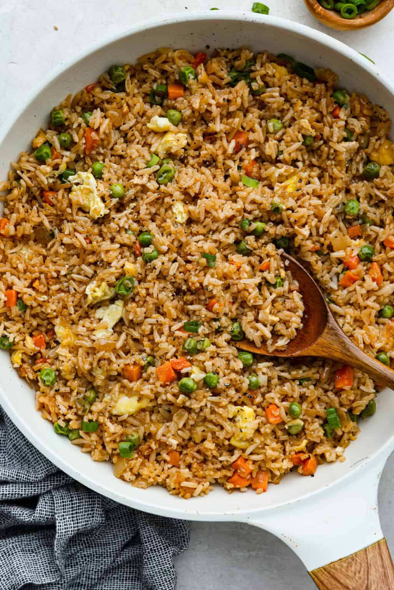
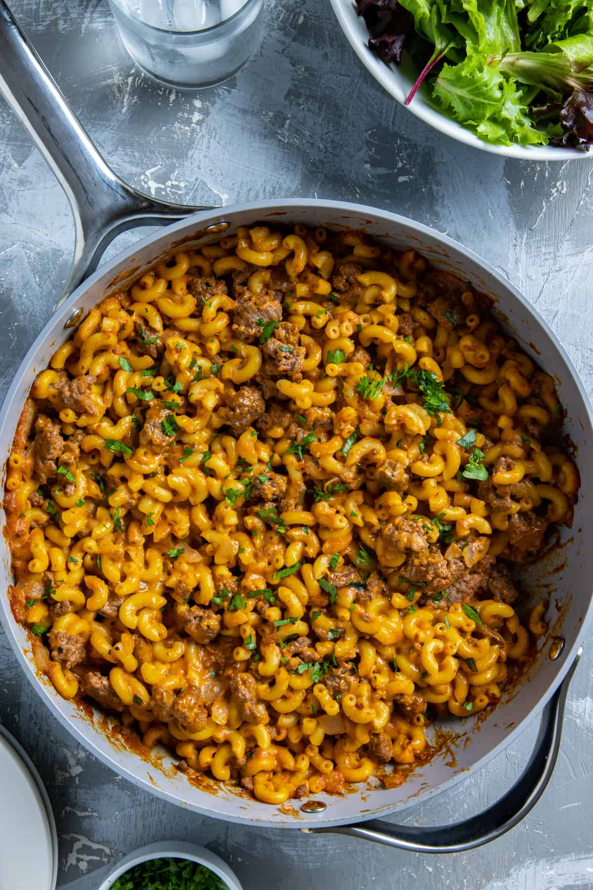
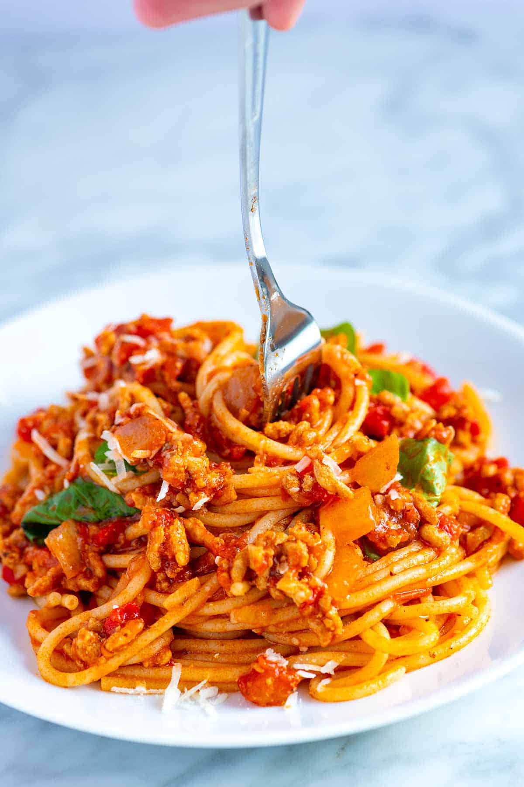
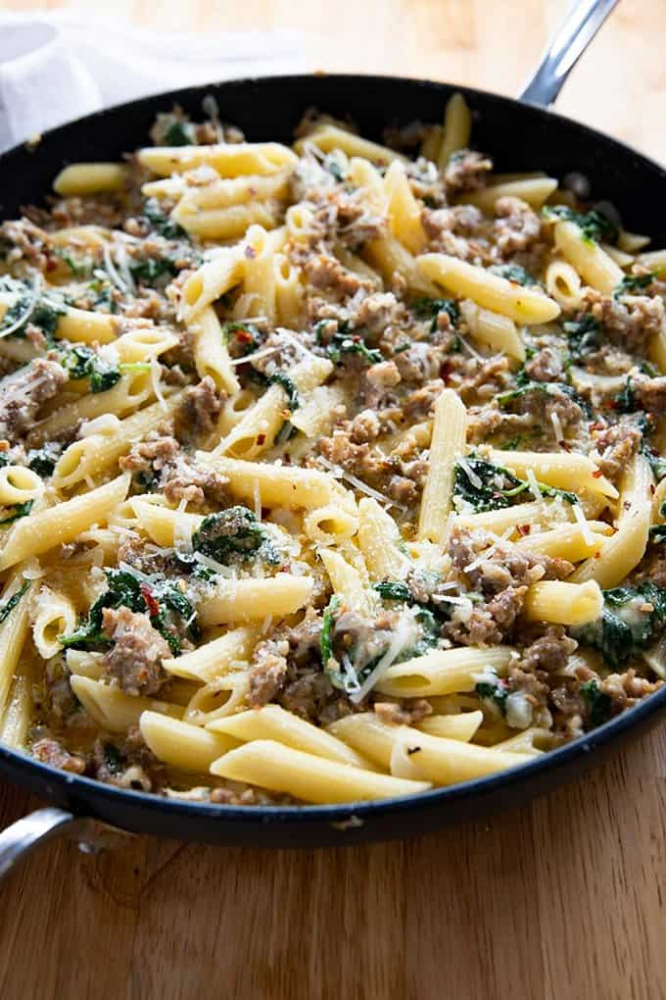

Food page
Local Food
The Root Cafe is a farm-to-table restaurant located in downtown Little Rock. This means that nearly all of the ingredients used for the menu are obtained from local farms and businesses.
The Root Cafe is a farm-to-table restaurant located in downtown Little Rock. This means that nearly all of the ingredients used for the menu are obtained from local farms and businesses.
A simple miso soup made with tofu and available vegetables

Soup made with leftover mashed potatoes topped with cheddar cheese, fried ham, and chives

Fried rice made with available vegetables and ground beef or tofu.

Made with leftover mac-and-cheese and ground beef

A simple spaghetti made with tomato sauce, parmesean cheese, and available herbs

Made using leftover sausage, creamy, parmesean, and available pasta